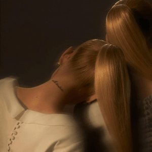
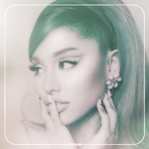

Yours Truly
Eternal Sunshine
Positions
Petal
Image Source: Open Fandom in a New Tab
Image Source: Open Wikipedia in a New Tab
Image Source: Open Wikipedia in a New Tab
Image Source: Open Wikipedia in a New Tab
Ariana Grande has kept her artistry going. She has released 8 studio albums over the course of 13 years (and counting). These albums are defined by her notable R&B aesthetic as well as polished pop. She has received 3 Grammys, with one of them being for her 4th studio album, Sweetener, for Best Pop Vocal Album. The other two were for Best Pop Duo/Group Performance, one with Lady Gaga for "Rain on Me" and one with Cynthia Erivo for "Defying Gravity" from the movie Wicked. Even though most of her discography has not been awarded by the Grammys, she has received many awards from other things like the VMAs or Video Music Awards, and her cultural impact cannot be denied.